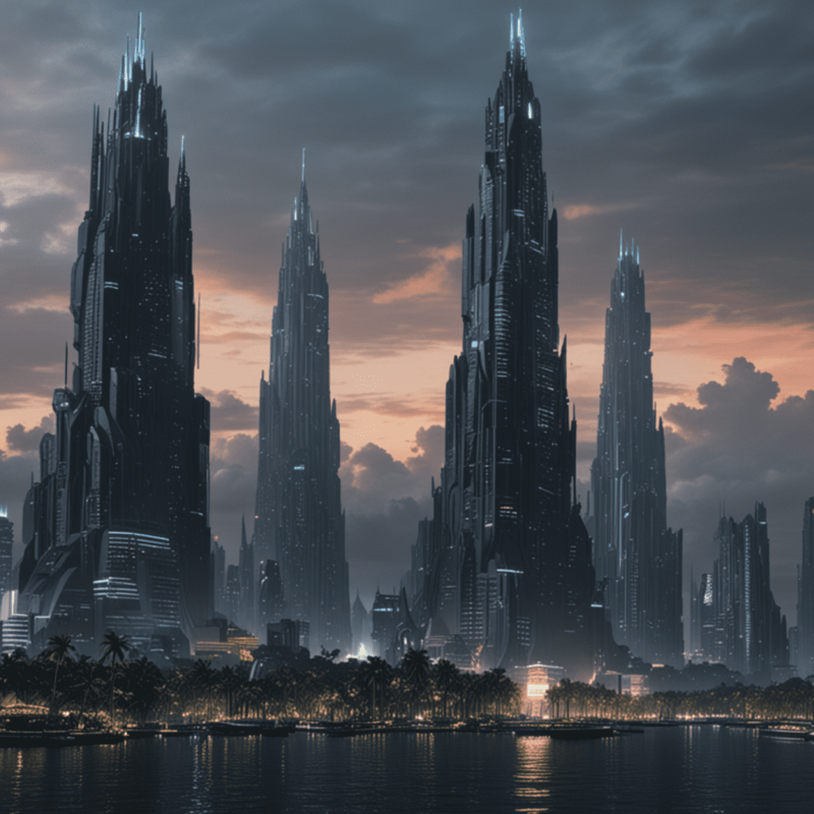

The Lost City of Biringan is a legendary and mythical place in the province of Samar, Philippines. According to local folklore and urban legends, Biringan City is a phantom city inhabited by supernatural beings known as Engkantos, which are enchanted beings and their descendants deeply rooted in the country's ancient animistic and religious cultures. The stories surrounding Biringan City tell that people who enter this mystical place disappear forever, never to return to the human world. The city is described as a hidden and magical realm, not visible to ordinary human eyes, where the Engkantos reside in beautiful palaces and fortresses reminiscent of mythical settings. For decades, the tales of Biringan City have been passed down through generations, captivating the imagination of locals and sparking intrigue and mystery among those who hear about it. The legends of Biringan City have become one of the most popular urban myths in the region, with various interpretations and versions of the story circulating among the people of Samar. Ultimately, the Lost City of Biringan remains a fascinating and enigmatic part of Filipino folklore, shrouded in mystery and wonder, as locals continue to share the stories of this phantom city and its mystical inhabitant.
Sources:
esquire Philippines Wikipedia 